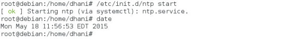
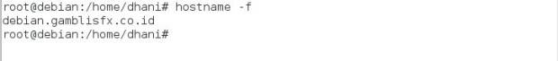
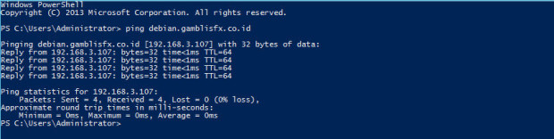
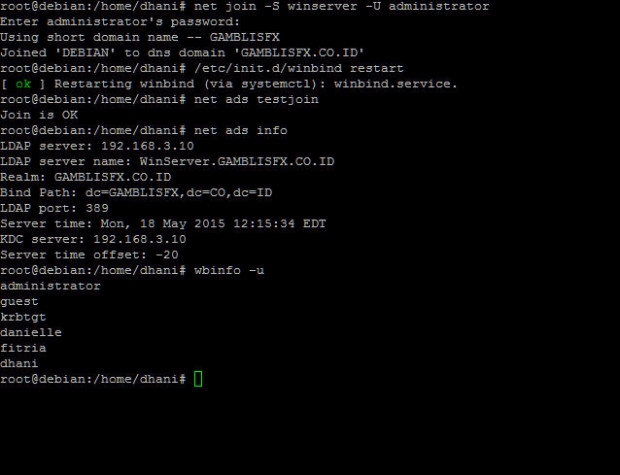
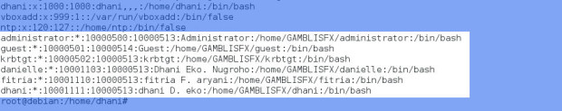
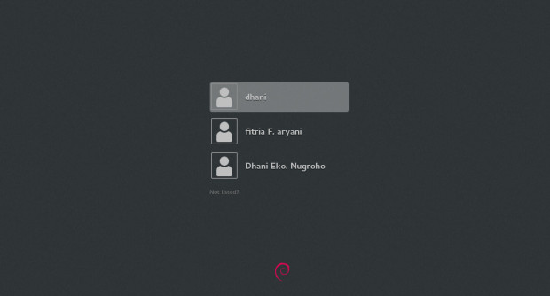

Примечание 1: Эта статья написана практически на Simple English, так что понятна даже с минимальными знаниями английского. Все что здесь написано, действительно справедливо для Debian 8 (лично проверено).
Примечание 2: практика показывает, что раздел настройки Kerberos можно пропустить. Похоже, что Samba сама настроит конфиг Kerberos. Достаточно чтобы стоял пакет krb5-user.
This tutorial is going to show you how to join Debian 8 “Jessie” to existing Windows Server Domain Controller (Active Directory). When Debian is connected and joined to a Domain Controller, we can use the domain users and password to log in to Debian Jessie. There are couple things to do here. Before we go through, I assume the Domain Controller is up and running to provide user login capability to the network. I am using Windows Server 2012 R2 with Domain Controller enabled.
On this tutorial, I use the following domain controller settings:
A. Install Samba and additional packages
In order to join a domain, Debian needs the following packages to be installed: ntp, samba smbclient samba-common winbind. Open Terminal, login as root and install those packages.
su
apt-get install samba smbclient samba-common winbind ntp libpam-krb5 krb5-user
B. Configure Samba and other settings
First we need to check if the time is correct. You may also add your server address that provide time update. Edit the file /etc/netp.conf if necessary. In my case I leave this as default.
/etc/init.d/ntp start
date

Check the hostname using “hostname -f” Make sure it returns fully qualified server host name. You can edit your host name on the /etc/hosts and /etc/hostname if needed.

Also make sure you can ping the hostname from other computer using the hostname

Edit Kerberos file in /etc/krb5.conf. Fill it with minimal configuration as follow. Change GAMBLISFX.CO.ID with your own setup.
[libdefaults]
default_realm = GAMBLISFX.CO.ID
dns_lookup_realm = false
dns_lookup_kdc = false
ticket_lifetime = 24h
renew_lifetime = 7d
forwardable = true
[realms]
GAMBLISFX.CO.ID = {
kdc = WINSERVER.GAMBLISFX.CO.ID
admin_server = WINSERVER.GAMBLISFX.CO.ID
}
[domain_realm]
.gamblisfx.co.id = GAMBLISFX.CO.ID
gamblisfx.co.id = GAMBLISFX.CO.ID
Clear any cache that exist with the following commands
kdestroy
klist
kinit fitria@GAMBLISFX.CO.ID
klist
Now Debian can get ticket from the AD domain successfully. Now we need to configure and join Debian system to the domain. We need to configure /etc/samba/smb.conf file.
The following are the content of my smb.conf file
workgroup = GAMBLISFX
realm = GAMBLISFX.CO.ID
security = ADS
password server = WINSERVER.GAMBLISFX.CO.ID
os level = 0
local master = No
domain master = No
template shell = /bin/bash
winbind enum users = Yes
winbind enum groups = Yes
winbind use default domain = Yes
idmap config GAMBLISFX:range = 10000000-19000000
idmap config GAMBLISFX:backend = rid
idmap config *:range = 11000-20000
idmap config * : backend = tdb
Now stop and restart the services below:
/etc/init.d/winbind stop
/etc/init.d/samba restart
/etc/init.d/winbind start
Now try to join domain with the following command and test if all working.
net join -S winserver -U administrator
/etc/init.d/winbind restart
net ads testjoin
net ads info
wbinfo -u
wbinfo -g

Now we need to setup authentication so domain users can use their password to login to Debian. Edit /etc/nsswitch.conf and add winbind to it.
# /etc/nsswitch.conf
#
# Example configuration of GNU Name Service Switch functionality.
# If you have the glibc-doc-reference' and info’ packages installed, try:
# `info libc “Name Service Switch”‘ for information about this file.
passwd: compat winbind
group: compat winbind
shadow: compat
gshadow: files
hosts: files myhostname mdns4_minimal [NOTFOUND=return] dns
networks: files
Now check and make sure your domain users and group are listed with the following commands
getent passwd
getent group

If you cannot see your Domain users listed, you may need to install the following packages:
apt-get install libnss-winbind libpam-winbind
Now all should be working. Finally, create a home directory once a Domain user log in to Debian
nano /etc/pam.d/common-session
session required pam_unix.so
session required pam_mkhomedir.so umask=0022 skel=/etc/skel
Next, try to login to Debian using Domain user and password. Enjoy
